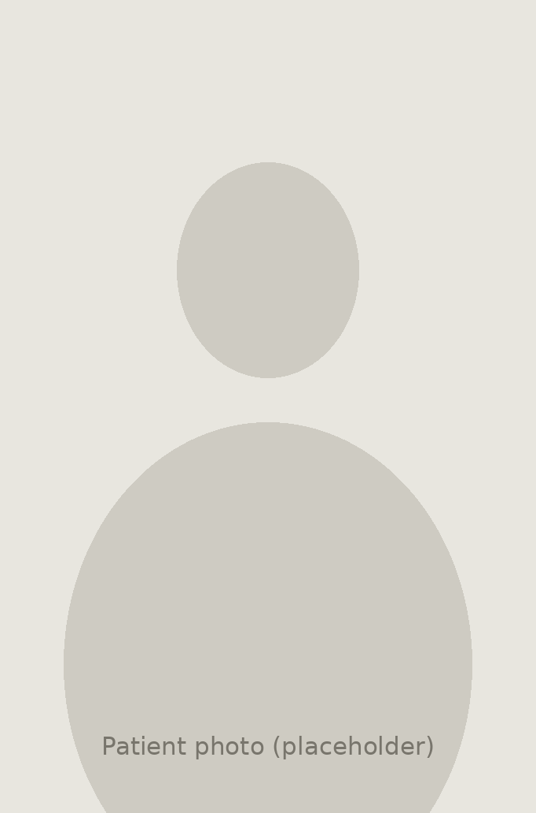
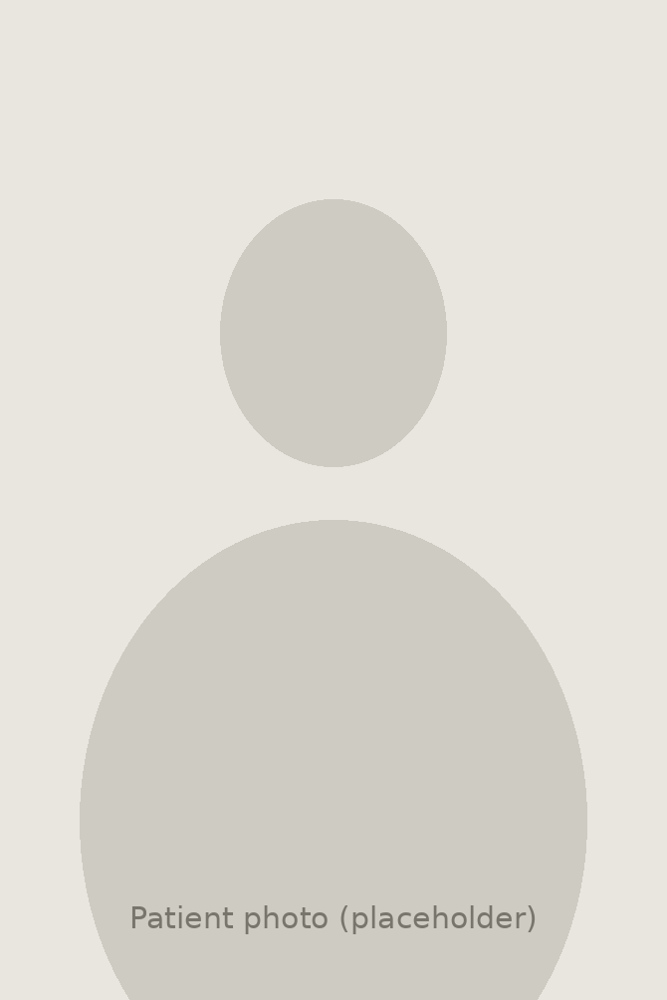
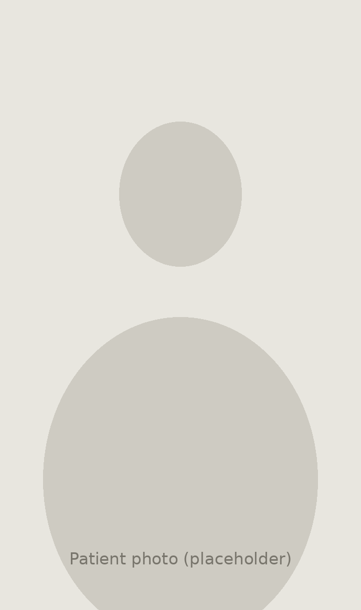

d
MR
Wednesday, August 26
Let's get designing, Maya.
{{ statusLabel }}
{{ so.label }}
{{ so.note }}
{{ statusNote }}
Crown & Bridge
{{ specialtyLabel }}
{{ tierLabel }}
Next in your queue
{{ hero.item }}
Tooth {{ hero.unn }} · shade {{ hero.shade }}
Patient
{{ hero.patient }}
Doctor
{{ hero.doctor }}
Design due
{{ hero.due }}
Complexity
High
Refab · 2nd attempt
Shade-critical
Defer with reason
Open case brief
↵
{{ queueHeading }}
Browse all orders
{{ chip.label }}
Tooth
Restoration
Doctor
Level
Due
{{ row.unn }}
{{ row.item }}
{{ row.sub }}
{{ row.doctor }}
{{ row.due }}
Nothing matches those filters.
Assigned to me and Unclaimed are mutually exclusive.
Today
14
cases designed
{{ avgValue }}
avg per case
98%
on time
{{ batchEyebrow }}
{{ batchTitle }}
{{ batchBody }}
{{ batchBtnLabel }}
At risk
1 case past 70% of turnaround
#9 crown, Dr. Carranza — unclaimed for 4 hours.
All orders
Orders.
{{ chip.label }}
Patient
Practice
Items
Status
Design due
{{ o.patient }}
{{ o.orderCount }}
{{ o.flagText }}
{{ o.practice }}
{{ o.doctor }}
{{ o.items }}
{{ o.lab }}
{{ o.status }}
{{ o.due }}
Your submitted designs
Design QA.
{{ q.title }}
{{ q.meta }}
{{ q.status }}
Last 30 days
96%
passed first time
Two returns this month, both on anterior shade calls. Worth a look at the layering guidance in Training.
Capabilities and levels
Training.
Your focus areas
{{ fa.label }}
{{ fa.level }}
Recent feedback
"Anterior layering on refabs — read the QC note before you touch the incisal third. Two returns came from starting the sculpt first."
Design lead · Aug 20
"Cleared for Level 4 anterior. Veneer cases now route to you."
Design lead · Aug 4
Before you design
{{ orderNo }}
Task · {{ taskType }}
{{ brief.title }}
Design due
{{ brief.dueLong }}
{{ ctaLabel }}
↵
{{ headerFacts }}
{{ hc.label }}
{{ sc.label }}
{{ viewerLabel }}
2.3 mm
incisal reduction
None
undercuts

Full face, repose

Smile · #9 site

Shade tab A2 beside #8
From the practice
{{ brief.photoNote }}
What you have to get right
{{ brief.askCount }}
{{ line.n }}
{{ line.text }}
{{ line.source }} · {{ line.anchor }}
Always true for {{ brief.doctor }}
{{ pc.label }}
All of these run as live checks in the editor. The two in blue were set by the doctor at the chair and override the standing preference.
This case, start to finish
Expand
{{ brief.notesLabel }}
{{ note.kind }}
{{ note.meta }}
{{ note.body }}
{{ ev.title }}
{{ ev.date }}
{{ ev.body }}
{{ ev.action }}
{{ brief.patientShort }}
·
{{ brief.editorTitle }}
Refab
Design due {{ brief.dueShort }}
{{ brief.dueIn }}
Guided
Pro
{{ st.label }}
{{ ss.label }}
{{ ss.badge }}
{{ dt.label }}
{{ dt.badge }}
{{ tipKey }}
{{ tipName }}
{{ tipDesc }}
Selection
Radius
5.00
Select through mesh
Actions
Uses your current mesh selection.
{{ a.label }}
{{ b.n }}
{{ b.label }}
Two bite scans landed. Both are in use.
Bite 1 · right
In use
Bite 2 · left
In use
Lower full arch
Reference
Aligned automatically from both bite scans.
Mean deviation
0.04 mm
Max deviation
0.11 mm
Re-run alignment
Select a criterion to inspect.
{{ c.label }}
{{ c.count }}
{{ c.verdict }}
VDO [mm]
−0.95
Overlap
0.50
Deconflict
Reposition
Sculpt usually needs a manual pass. Review anatomy and contacts before continuing.
Brush
{{ sl.label }}
{{ sl.value }}
‹ Prev
Crown {{ brief.unn }}
Next ›
Source
{{ ms.label }}
{{ ms.eye }}
1,284 points detected. The margin dips subgingival on the mesial — worth two nudges.
‹ Prev
Crown {{ brief.unn }}
Next ›
↖
↑
↗
←
4.2°
→
↙
↓
↘
Set from view
Optimize
No undercuts at this axis. Optimize would shift it 0.3°.
Suggested by Dandy
Bio-difficulty
Possible
Impossible
Copy source
Tooth #8 · contralateral
The doctor asked for a match to #8, so #8 is the copy source rather than a library tooth.
Set the front view
Orbit until the arch faces you square, then save. Everything downstream uses this orientation.
Assisted today, not fully automatic. The symmetry helper aligns the plane for you, but a designer still confirms it.
Align to the patient
{{ fp.label }}
Overlay
{{ op.label }}
The photo sits over the render with a midline guide, so the front view matches the face rather than the scan's own axes.
Save current view as front
Where the crown comes from
{{ cs.label }}
{{ cs.tag }}
{{ cs.body }}
Generation {{ mlGen }}
{{ mlConfidence }}
{{ mlNote }}
Reference anatomy
{{ rp.label }}
Regenerate
{{ revertLabel }}
Central incisor templates
6 of 42
{{ tp.pickMark }}
{{ tp.label }}
{{ tp.meta }}
Filtered to #9 automatically. Drop the library renders onto a tile to see them here.
Copy from
{{ cp.label }}
{{ cp.meta }}
The doctor asked for a match to #8, which makes the contralateral the strongest reference on this case.
{{ activeToolName }}
{{ ts.label }}
{{ ts.value }}
{{ toolHint }}
Thicken to 0.60 mm automatically
Add pink porcelain
{{ pinkState }}
Standing preference for Dr. Silva is no pink porcelain \u2014 turning this on will flag the case.
{{ reviewHeadline }}
{{ flagsBannerText }}
Review
What changed since v1
{{ brief.prevBody }}
{{ g.mark }}
{{ g.label }}
{{ g.detail }}
View
Where this goes
{{ routingText }}
{{ routingSub }}
This is attempt 2
{{ brief.prevQcShort }}
Prev
{{ nextLabel }}
{{ calloutKind }}
{{ calloutBody }}
{{ calloutMeta }}
Fix automatically
0.10mm
0.08mm
0.06mm
0.04mm
0.02mm
0.00mm
{{ heatmapName }}
Flags on this design
{{ flagCountLabel }}
{{ fg.label }}
{{ fg.count }}
{{ fl.title }}
{{ fl.where }}
{{ fl.body }}
{{ fl.fix }}
{{ fl.primaryLabel }}
{{ fl.secondaryLabel }}
Notify doctor
{{ fl.statusText }}
Reopen
Scans on this case
Working scans
{{ sw.label }}
{{ sw.meta }}
Opacity
{{ sw.opLabel }}
Stone
Upper references
{{ su.label }}
{{ su.meta }}
Opacity
{{ su.opLabel }}
Stone
Lower references
{{ sl2.label }}
{{ sl2.meta }}
Opacity
{{ sl2.opLabel }}
Stone
Add a scan
Add reference
Shortcuts for {{ scTitle }}
{{ tb.label }}
{{ gp.label }}
{{ it.name }}
{{ it.keys }}
{{ vz.group }}
{{ vz.title }}
{{ v.label }}
Intent
{{ intentLine }}
{{ m.label }}
{{ m.actual }}
{{ flagPillLabel }}
Show v1
Prep stump
Opposing
{{ cv.label }}
Current
Generation {{ mlGenLabel }}
Margin
Opposing
Previous · v1
{{ brief.prevDate }}
Opposing
Pre-op
Both panes share the view above · scans toggle independently per side
Design submitted.
{{ submittedNote }}
Next case
{{ lbCaption }}
{{ lbMeta }} · {{ lbCount }}
{{ lbZoomLabel }}
Fit
Value check
Scroll to zoom · drag to pan · ← → to switch · Esc to close
This case, start to finish
Timeline
List
Filter
{{ tf.label }}
{{ ev.date }}
{{ ev.kindLabel }}
{{ ev.title }}
{{ ev.kindLabel }}
{{ ev.title }}
{{ ev.date }}
{{ ev.body }}
{{ tlSelTitle }}
{{ tlSelDate }}
Select an event with a scan or design attached to view it here.
You have been here before
Pick up where you left off?
You started this case at {{ draftAt }} and stopped after {{ draftMins }}. The autosave is intact — prep, margin and the crown you had chosen.
Start fresh
Resume the autosave
Back to the brief
Defer this case
Why are you passing?
It goes back to routing with your reason attached, so it lands somewhere better next time.
{{ dr.label }}
Cancel
Defer and take the next case
{{ toast }}